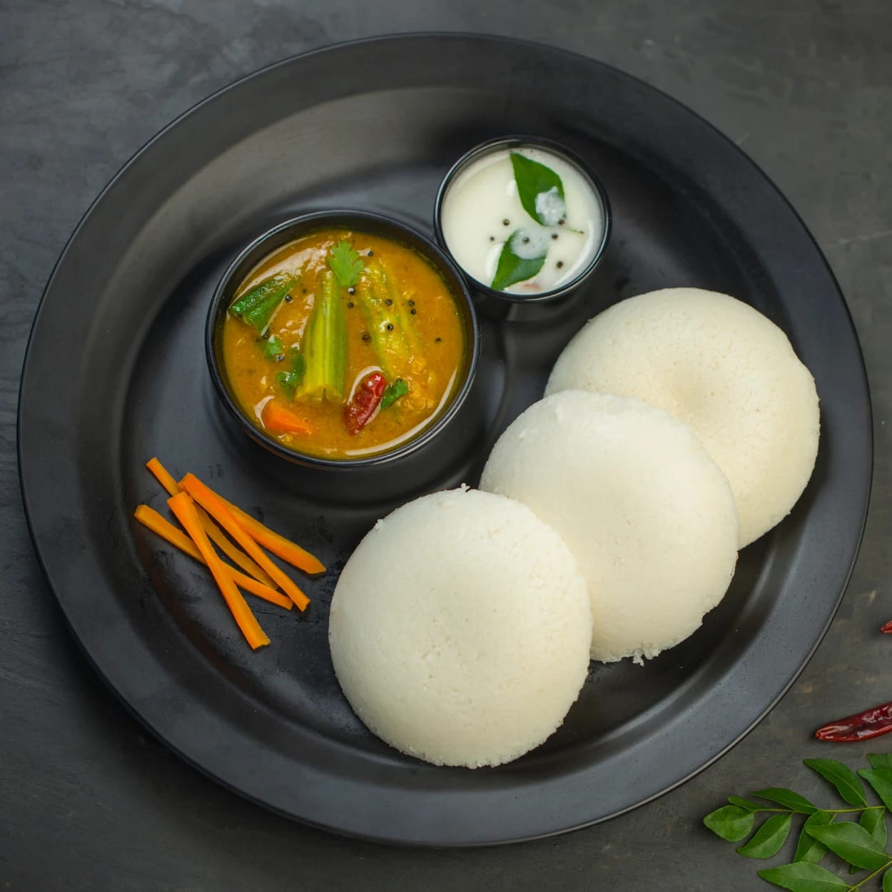

Idli
⭐⭐⭐⭐⭐ 4.9 Rating | ⏱ 40 Minutes | 🍽 4 Servings
Category
Breakfast
Difficulty
Easy
Calories
58 kcal (1 Idli)
Cooking Style
Steamed
📋 Ingredients
- 2 Cups Idli Rice
- 1 Cup Urad Dal
- ½ tsp Fenugreek Seeds
- Salt to Taste
- Water as Required
- Oil for Greasing
🍳 Required Utensils
- Mixing Bowl
- Mixer Grinder
- Idli Stand
- Pressure Cooker / Idli Steamer
- Cooking Spoon
- Serving Plate
📖 Introduction
Idli is one of the healthiest South Indian breakfast dishes. It is soft, fluffy, steamed and prepared using fermented rice and urad dal batter. It is commonly served with coconut chutney and sambar.
🔬 Principle
Fermentation produces air bubbles in the batter, making the idlis soft and spongy. Steaming cooks them evenly without using oil, making them light and healthy.
👨🍳 Procedure
- Wash rice and urad dal separately.
- Soak rice for 6 hours.
- Soak urad dal and fenugreek seeds for 4 hours.
- Grind urad dal into a smooth paste.
- Grind rice into a slightly coarse paste.
- Mix both batters together.
- Add salt and mix well.
- Ferment overnight (8–10 hours).
- Grease the idli moulds with oil.
- Pour batter into the moulds.
- Steam for 12–15 minutes.
- Allow to cool for 2 minutes.
- Remove the idlis using a spoon.
- Serve hot with chutney and sambar.
⚠ Precautions
- Use fresh ingredients.
- Do not overfill the idli moulds.
- Allow proper fermentation.
- Steam on medium flame.
- Do not overcook.
💡 Chef Tips
- Use idli rice for soft idlis.
- Add a handful of cooked rice while grinding.
- Use warm water during winter for fermentation.
- Serve immediately for the best taste.
🥗 Nutrition Facts
| Nutrient | Amount |
|---|---|
| Calories | 58 kcal |
| Protein | 2 g |
| Carbohydrates | 12 g |
| Fat | 0.4 g |
🍽 Serving Suggestions
- Coconut Chutney
- Sambar
- Tomato Chutney
- Mint Chutney
- Filter Coffee
🌿 Health Benefits
- Low in fat.
- Easy to digest.
- Rich in carbohydrates for energy.
- Fermented food supports gut health.
- Ideal breakfast for all age groups.
✅ Result
The prepared Idlis should be soft, fluffy, white and spongy. They should have a mild fermented aroma and taste delicious when served hot with sambar and coconut chutney.
🎥 Watch Recipe Video
Learn the complete recipe by watching the step-by-step video.
▶ Watch on YouTube